안녕하세요 솔루션 비제트입니다.
윈도우 11 업데이트 시 네트워크 공유 불가, 네트워크 자격 증명 입력 문제로 잘 되던 윈도우 공유폴더가 안되는 경우가 종종 있습니다.
윈도우 11 24H2 버전 업데이트 이후 종종 나타나는 증상입니다.
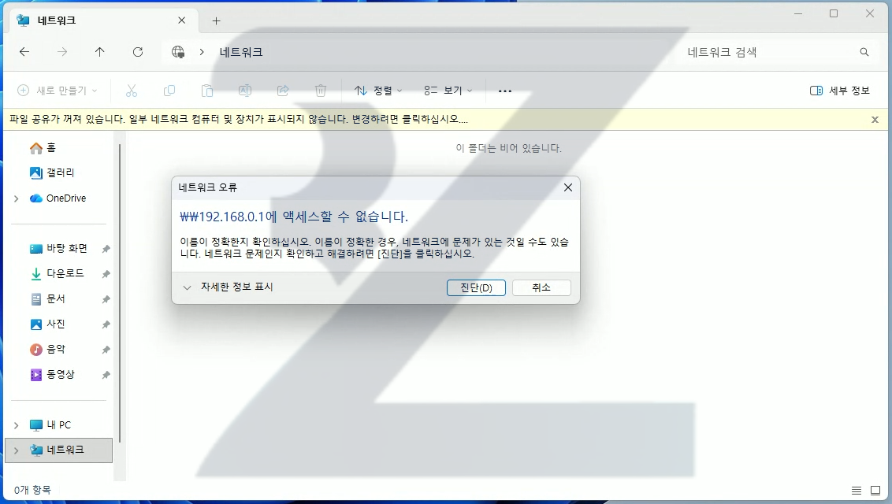
고급 설정 변경해도 자격 증명으로 진행되지 않는 경우도 생깁니다.
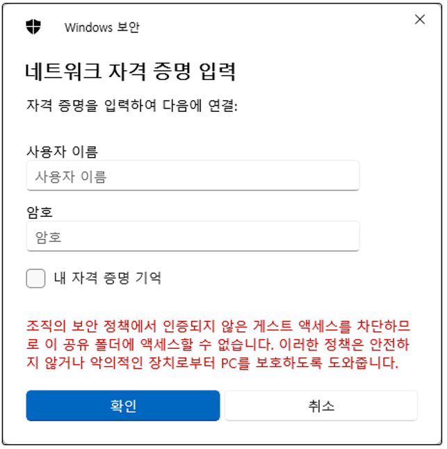
해당 문제를 해결 하기 위해서 윈도우 설정과 레지스트리 값을 변경해주어야합니다.
하지만 일반 사용자가 설정변경, 레지스트리변경을 진행하기는 어렵다고 생각하여,
저희 솔루션 비제트에서 BSS : BZ SMB Settings 프로그램을 만들었습니다.
하단 프로그램 다운로드 버튼을 통해 프로그램 실행 후
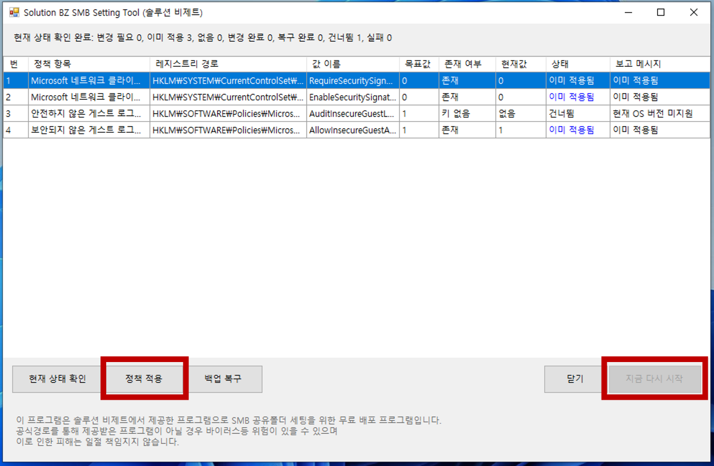
하단의 정책 적용 클릭, 지금 다시 시작 클릭하시면 컴퓨터가 재부팅되고 정상적으로 공유폴더를 사용할 수 있게 됩니다.
*주의! 윈도우 공유폴터는 내부망 시스템을 통해 공유되는 윈도우 내장 서비스입니다. 보안 업데이트 진행으로 SMB 공유폴더 사용 불가하게 된 것이며, 해당 프로그램 작업 진행 시 보안이 약해질 수 있습니다. 해당 내용 인지 후 작업 부탁드리며, 해당 보안변경으로 인한 피해는 책임지지 않습니다. 감사합니다.
직접 적용하기.
저희가 제공해드리는 보안 정책기 사용 불가하시거나 어려우신 경우 다음 순서를 따라 직접 작업하시면 됩니다.
우측 하단 네트워크 로고 우클릭
네트워크 및 인터넷 설정 버튼 클릭
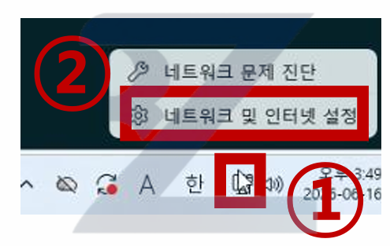
이더넷 클릭
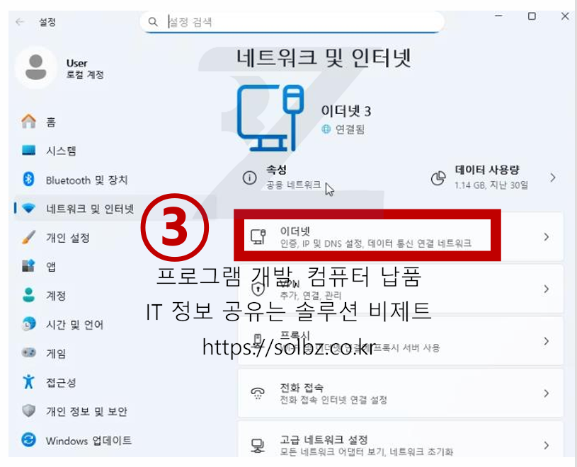
개인 네트워크 클릭
뒤로가기 버튼
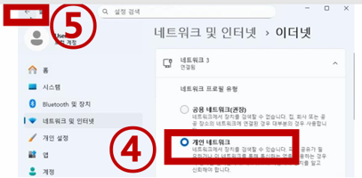
고급 내트워크 설정 클릭
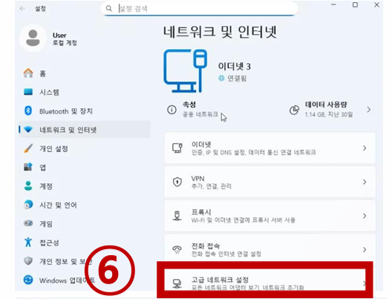
고급 공유 설정 클릭
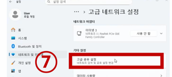
다음 사진대로 설정 클릭.
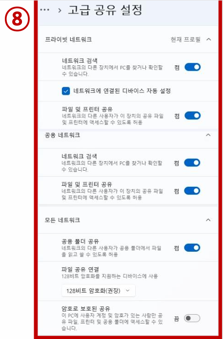
윈도우키 + R 누르기
실행 창에 gpedit.msc 입력
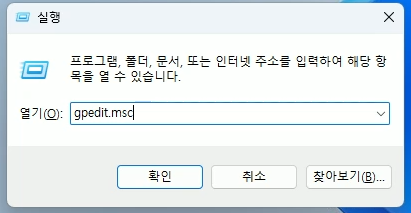
해당 경로로 설정 변경
(컴퓨터 구성 > Windows 설정 > 보안 설정 > 로컬 정책 > 보안옵션 > Microsoft 네트워크 클라이언트 : 디지털 서명통신(항상) - 사용안함
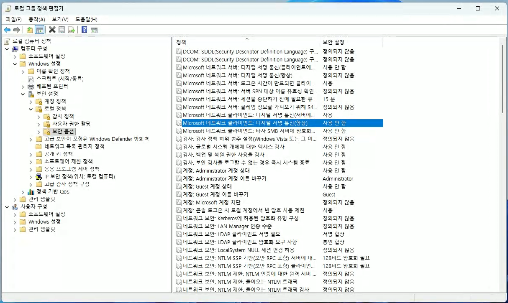
해당 경로로 설정 변경
(컴퓨터 구성 > 관리 템플릿 > 네트워크 > Lanman 워크스테이션 > 안전하지 않은 게스트 로그온 감사 - 사용)
(컴퓨터 구성 > 관리 템플릿 > 네트워크 > Lanman 워크스테이션 > 보안되지 않은 게스트 로그온 사용 - 사용)
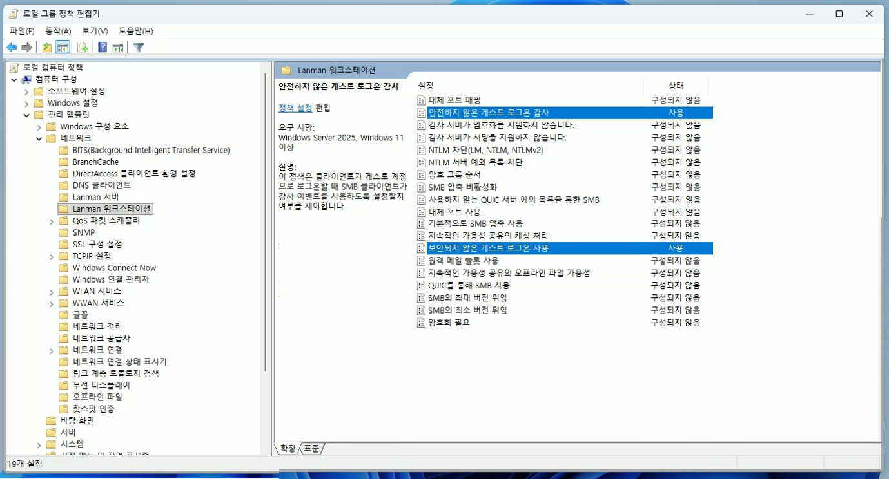
재부팅 후 공유폴더 사용 가능